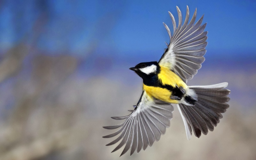
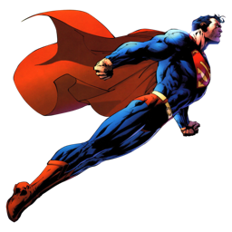
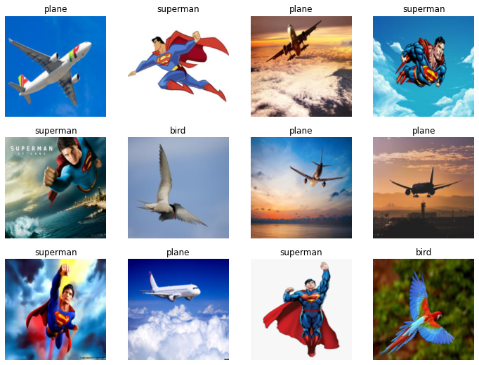

!pwd/contentTrying out the concepts taught in fastai lesson 1 with a new dataset.
Inspired by this Superman comic, I’m building a deep learning classifier to distinhuish between images of birds, planes and supermen.

!pwd/contentHere’s the process:
!pip install -Uqq fastai duckduckgo_search |█████▏ | 10 kB 24.3 MB/s eta 0:00:01 |██████████▍ | 20 kB 15.9 MB/s eta 0:00:01 |███████████████▋ | 30 kB 20.8 MB/s eta 0:00:01 |████████████████████▉ | 40 kB 13.2 MB/s eta 0:00:01 |██████████████████████████ | 51 kB 7.1 MB/s eta 0:00:01 |███████████████████████████████▎| 61 kB 8.4 MB/s eta 0:00:01 |████████████████████████████████| 62 kB 1.5 MB/s
|███▍ | 10 kB 25.6 MB/s eta 0:00:01 |██████▉ | 20 kB 33.5 MB/s eta 0:00:01 |██████████▏ | 30 kB 38.0 MB/s eta 0:00:01 |█████████████▋ | 40 kB 43.0 MB/s eta 0:00:01 |█████████████████ | 51 kB 44.0 MB/s eta 0:00:01 |████████████████████▍ | 61 kB 47.6 MB/s eta 0:00:01 |███████████████████████▊ | 71 kB 50.3 MB/s eta 0:00:01 |███████████████████████████▏ | 81 kB 51.8 MB/s eta 0:00:01 |██████████████████████████████▌ | 92 kB 53.5 MB/s eta 0:00:01 |████████████████████████████████| 96 kB 6.5 MB/s
ERROR: pip's dependency resolver does not currently take into account all the packages that are installed. This behaviour is the source of the following dependency conflicts.
flask 1.1.4 requires click<8.0,>=5.1, but you have click 8.1.3 which is incompatible.from duckduckgo_search import ddg_images
from fastcore.all import *bird = ddg_images('bird', max_results=2).itemgot('image') on L to extract the urls onlybird[{'title': 'Pair these bird events with Great Backyard Bird Count - pennlive.com',
'image': 'https://www.pennlive.com/resizer/UeXGnWaOE07lC4n_J5lJ0a1M-_M=/1280x0/smart/advancelocal-adapter-image-uploads.s3.amazonaws.com/image.pennlive.com/home/penn-media/width2048/img/entertainment_impact/photo/shutterstock-58364638jpg-6932548563f01558.jpg',
'thumbnail': 'https://tse1.mm.bing.net/th?id=OIP.tAh4IvhbxtzpJUCMwC-djQHaGe&pid=Api',
'url': 'https://www.pennlive.com/entertainment/2015/02/pair_these_bird_events_with_gr.html',
'height': 1118,
'width': 1280,
'source': 'Bing'},
{'title': "Help Count Birds for Science during Audubon's Annual Christmas Bird Count - Restore the ...",
'image': 'https://www.mississippiriverdelta.org/files/2015/12/BUFH-wing-feathers.jpg',
'thumbnail': 'https://tse2.mm.bing.net/th?id=OIP.1xYUOvqR7iH9FMoKBawtIAHaF1&pid=Api',
'url': 'https://mississippiriverdelta.org/help-count-birds-for-science-during-audubons-annual-christmas-bird-count/',
'height': 1340,
'width': 1700,
'source': 'Bing'}]L(bird).itemgot('image')(#2) ['https://www.pennlive.com/resizer/UeXGnWaOE07lC4n_J5lJ0a1M-_M=/1280x0/smart/advancelocal-adapter-image-uploads.s3.amazonaws.com/image.pennlive.com/home/penn-media/width2048/img/entertainment_impact/photo/shutterstock-58364638jpg-6932548563f01558.jpg','https://www.mississippiriverdelta.org/files/2015/12/BUFH-wing-feathers.jpg']Build search_images using these
def search_images(keyword, max_images=30):
return L(ddg_images(keyword, max_results=max_images)).itemgot('image')url = search_images('flying bird', 1)
url(#1) ['http://1.bp.blogspot.com/-6anwlEoD-Ec/UmvgxLKbxsI/AAAAAAAAZhQ/z64F1RGv7iU/s1600/Flying+Birds+Wallpapers+%25283%2529.jpg']from fastdownload import download_url
download_url(url[0], dest='bird.jpg', show_progress=False)Path('bird.jpg')from fastai.vision.all import *
im = Image.open('bird.jpg')
im.to_thumb(256,256)
download_url(search_images('flying plane', 1)[0], dest='plane.jpg', show_progress=False)
Image.open('plane.jpg').to_thumb(256, 256)download_url(search_images('flying superman', 1)[0], dest='superman.jpg', show_progress=False)
Image.open('superman.jpg').to_thumb(256, 256)
import ossearches = ['bird', 'plane', 'superman']
path = Path('is_that_a')
for s in searches:
dest = (path/s)
dest.mkdir(exist_ok=True, parents=True)
download_images(dest, urls=search_images(f'flying {s}'))
resize_images(path/s, max_size=400, dest=path/s)failed = verify_images(get_image_files(path))
failed.map(Path.unlink)
len(failed)0dls = DataBlock(blocks=(ImageBlock, CategoryBlock),
get_items=get_image_files,
splitter=RandomSplitter(valid_pct=0.2, seed=42),
get_y=parent_label,
item_tfms=[Resize(192, method='squish')]
).dataloaders(path, bs=32)
dls.show_batch(max_n=12)
learn = vision_learner(dls, resnet18, metrics=error_rate)
learn.fine_tune(3)/usr/local/lib/python3.7/dist-packages/torchvision/models/_utils.py:209: UserWarning: The parameter 'pretrained' is deprecated since 0.13 and will be removed in 0.15, please use 'weights' instead.
f"The parameter '{pretrained_param}' is deprecated since 0.13 and will be removed in 0.15, "
/usr/local/lib/python3.7/dist-packages/torchvision/models/_utils.py:223: UserWarning: Arguments other than a weight enum or `None` for 'weights' are deprecated since 0.13 and will be removed in 0.15. The current behavior is equivalent to passing `weights=ResNet18_Weights.IMAGENET1K_V1`. You can also use `weights=ResNet18_Weights.DEFAULT` to get the most up-to-date weights.
warnings.warn(msg)
Downloading: "https://download.pytorch.org/models/resnet18-f37072fd.pth" to /root/.cache/torch/hub/checkpoints/resnet18-f37072fd.pth| epoch | train_loss | valid_loss | error_rate | time |
|---|---|---|---|---|
| 0 | 2.054615 | 1.164085 | 0.352941 | 00:08 |
| epoch | train_loss | valid_loss | error_rate | time |
|---|---|---|---|---|
| 0 | 1.213407 | 0.438084 | 0.176471 | 00:12 |
| 1 | 0.745004 | 0.064237 | 0.000000 | 00:13 |
| 2 | 0.510461 | 0.036753 | 0.000000 | 00:13 |
is_that_a,_,probs = learn.predict(PILImage.create('bird.jpg'))
print(f"That is a: {is_that_a}.")
print(f"Probability: {probs[0]:.4f}")
im = Image.open('bird.jpg')
im.to_thumb(256,256)That is a: bird.
Probability: 0.9944
is_that_a,_,probs = learn.predict(PILImage.create('plane.jpg'))
print(f"That is a: {is_that_a}.")
print(f"Probability: {probs[1]:.4f}")
im = Image.open('plane.jpg')
im.to_thumb(256,256)That is a: plane.
Probability: 0.9989is_that_a,_,probs = learn.predict(PILImage.create('superman.jpg'))
print(f"That is a: {is_that_a}.")
print(f"Probability: {probs[2]:.4f}")
im = Image.open('superman.jpg')
im.to_thumb(256,256)That is a: superman.
Probability: 0.9998